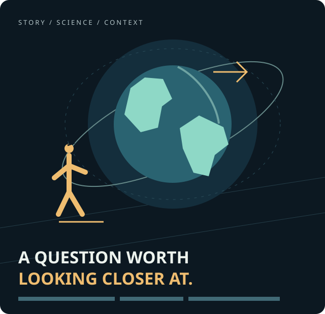

Start with the story.
Write an educational script, check its claims and plan a coherent sequence. Distinguish established facts from illustrations and fiction.
Educational video / Desktop workflow
ATLAS DISCOVER is a local macOS desktop production project for creating educational short videos and preparing them for publication on TikTok and YouTube Shorts.
Create, narrate, animate, subtitle and export. Review the result, then choose what to share.

From an idea to an export
The existing ATLAS pipeline combines scripts, local narration, animation, captions and editing. Project files and finished exports are saved on the creator’s Mac. The current work includes science explainers and clearly labeled fictional survival stories.
Write an educational script, check its claims and plan a coherent sequence. Distinguish established facts from illustrations and fiction.
Combine local speech synthesis, original 2D animation, English subtitles, music and sound effects. Assemble and export with the existing media tools.
Review the exported MP4 and prepare its cover, description and captions. Publish manually through the platform’s own interface when you are ready.
TikTok Login Kit / Desktop
The prepared Login Kit module opens TikTok in the system browser and receives an authorization response through a temporary loopback callback. The current permission request is limited to user.info.basic.
The module implements state verification, PKCE and token refresh. Access and refresh tokens are designed to be stored in the macOS login Keychain, rather than in this website or browser storage.
Local mock and callback tests have passed. Live TikTok authorization, app approval and integration with a finished desktop interface have not yet been verified.
Read about account data →The current module does not request video.upload or video.publish. It cannot upload, schedule or publish videos using the TikTok API.
API publishing would require a separate implementation, appropriate product access and permissions, user consent, and updated disclosures. This website is informational and does not initiate OAuth.
Read the platform conditions →A practical data boundary
This site has no account system, analytics scripts, advertising trackers, embedded players, forms or payment processing. It neither receives OAuth callbacks nor stores TikTok credentials.
Local files remain under the creator’s control. Any separately configured cloud-generation service has its own data handling; connecting to TikTok does not authorize sending project media to such a service.
How data is handled →Operator & contact
The operator must complete the following information before this website is published or submitted to TikTok.
Operator / legal name: [TO BE COMPLETED: OPERATOR_LEGAL_NAME]
Country of establishment: [TO BE COMPLETED: OPERATOR_COUNTRY]
Support and privacy email: [TO BE COMPLETED: CONTACT_EMAIL]
Postal or business address, where legally required: [TO BE COMPLETED: REQUIRED_CONTACT_ADDRESS_OR_JUSTIFIED_NOT_APPLICABLE]
No contact address, company registration, public release date or TikTok approval is implied by this draft.